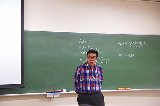
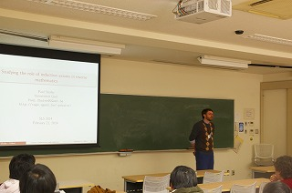
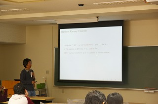
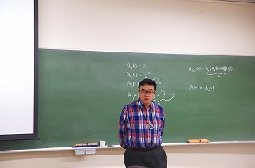
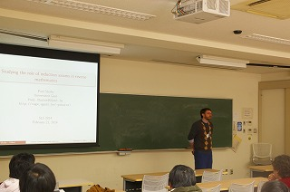
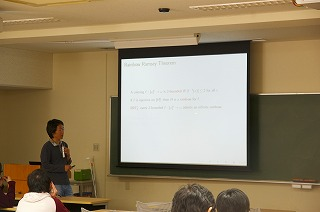

Acknowledgement
We would like to thank the speakers:
Professor S. G. Simpson,
Professor P. Shafer,
Professor Wei Wang,
Professor Keng Meng Ng.
We also thank Professor Ryo Kashima and all members of his research group!
We really appreciate all your helps!!
What's new
- (Mar. 3) Slides and the acknowledgement were updated.
- (Feb. 28) Photos were updated.
- (Feb. 20) Abstracts were updated.
- (Feb. 06)Information about dinner party was updated. (Please check this if you'd like to join.)
- (Feb. 06) Abstracts were updated.
- (Jan. 28) Information about dinner party was updated.
- (Jan. 28) Place information was updated.
Date/Place
Feb. 21, 2014
Room W933, West Bldg. 9, Ookayama Campus,
Tokyo Institute of Technology, Japan (Map)
Photos
  

 
 


Lecturers
- Stephen G. Simpson (Pennsylvania State University)
- Paul Shafer (Ghent University)
- Wei Wang (Sun Yat-sen University)
- Keng Meng Ng (Nanyang Technological University)
Timetable/Abstracts
| 10:00 - 11:00 | Stephen G. Simpson |
| 11:00 - 11:15 | Break (Photographs will be taken with all participants) |
| 11:15 - 12:15 | Paul Shafer |
| 12:15 - 13:45 | Lunch Break |
| 13:45 - 14:45 | Wei Wang |
| 14:45 - 15:00 | Break |
| 15:00 - 16:00 | Keng Meng Ng |
| 16:00 - 16:30 | Break |
| 16:30 - 18:00 | Problem session |
Stephen G. Simpson
- Title:
- Reverse mathematics and Hilbert's Program [slides]
- Abstract:
- I will make some remarks concerning reverse mathematics and its application to Hilbert's foundational program of finitistic reductionism. My thesis is that, in order for a piece of mathematics to be finitistically reducible, its proof-theoretic strength must be no greater than that of PRA (= Primitive Recursive Arithmetic). Reverse Mathematics has been very useful for determining which theorems are reducible to PRA in this sense. I will mention some old and new theorems of this kind.
Paul Shafer
Wei Wang
Keng Meng Ng
- Title:
- A survey on recent work involving arithmetical level equivalence relations [slides]
- Abstract:
- In this talk we will explore some recent results in the study of low-level equivalence relations on the natural numbers. A Sigma^0_n equivalence relation R is universal if for every Sigma^0_n equivalence relation S, S is reducible to R. we explore properties of the universal Sigma^0_1 equivalence relations. We also talk about the problem of finding complete equivalence relations at higher levels of the arithmetical hierarchy. Finally we introduce a reducibility between equivalence relations which we argue is sometimes more natural than the standard computable reducibility.
Dinner party
Place: Yakichi (site (Japanese)).
Price: 5300 yen.
Links
- Computability Theory and Foundations of Mathematics 2014
- http://www.jaist.ac.jp/CTFM/CTFM2014/
- Sendai Logic School 2013
- http://sendailogic.math.tohoku.ac.jp/SLS/